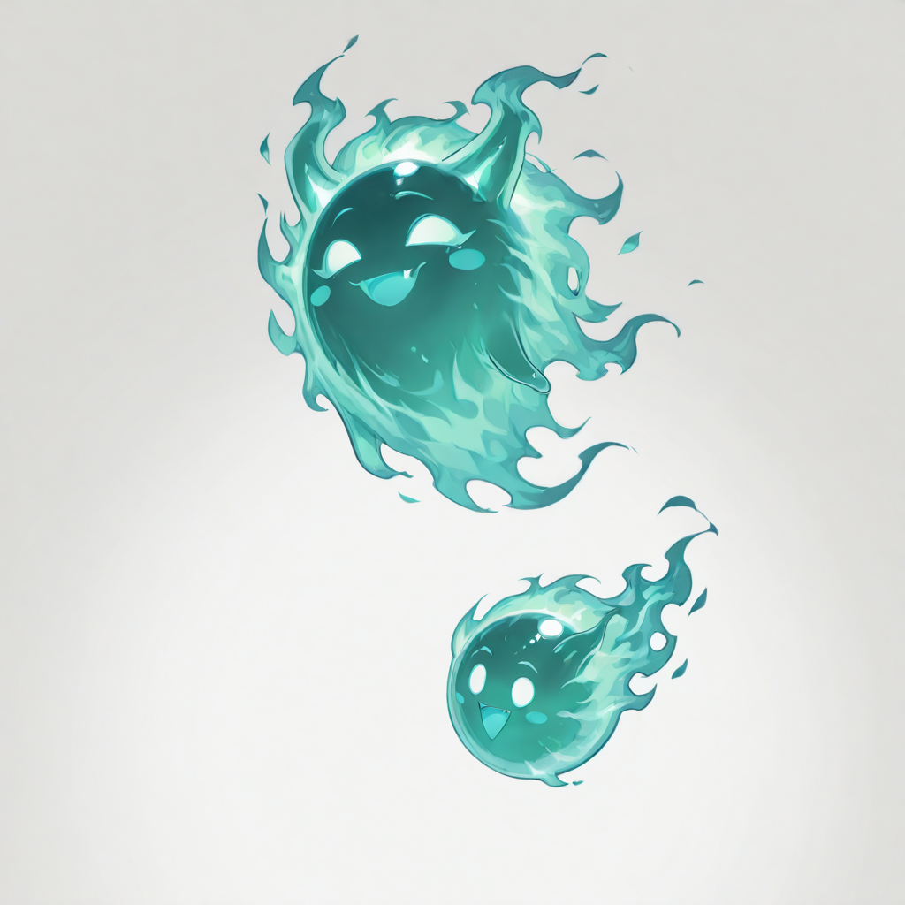
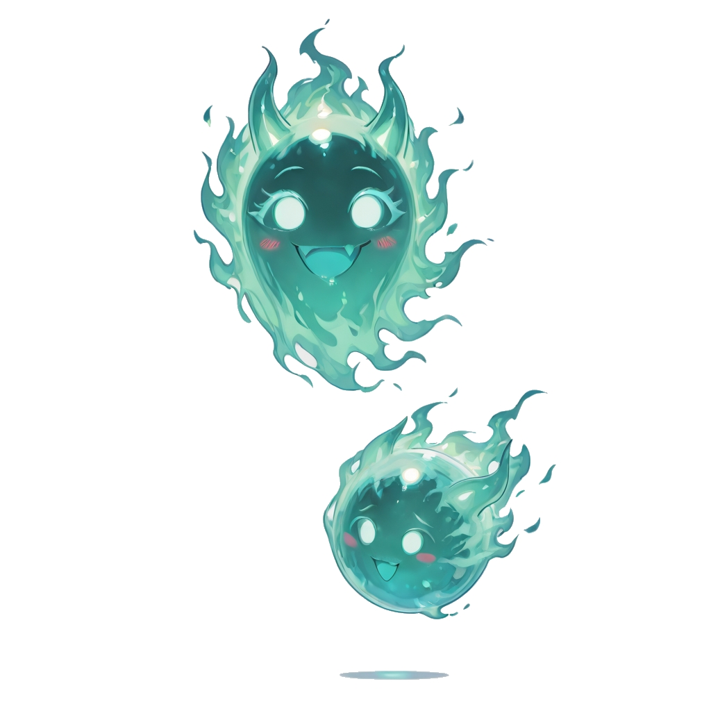

The First Flicker
They are barely larger than a fist. A soft spot of light , greenish-white, flickering at an irregular rate that suggests breathing. They do not speak yet, and they do not need to. They drift toward the wounded the way smoke drifts toward cold air: instinctively, quietly, with no explanation.
The Will-o'-the-Wisps are the most recently born of the Linfa branch. Their Sap-to-shadow ratio is still almost entirely sap , they are 90% Malicott, only 10% the person they used to be. But that 10% already contains the thing that matters most: the drive to sustain. Even before they recover a name, they know whose wounds to move toward.
In the early days of camp life, newly awakened Wisps hover near the injured in the infirmary for hours, their light cycling softly. The healers say it accelerates recovery. The Wisps have no theory for why , they just know that being near something in pain is the place they are supposed to be.
Tactical Data
Flickering Light
BaseGallery
